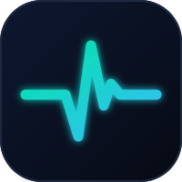

Calibrate once with a real cuff reading to enable trend estimates.
Optional — a cuff reading taken right after a scan fine-tunes your estimate and donates one labeled example that trains the phone-only model. Not required.
📏 Check accuracy — enter a reference HR from a watch/oximeter:
Derived insights~ ESTIMATE
Lab biomarkers🔒 PHASE 2 · NEEDS AI MODEL
These can't be measured from a camera with signal processing alone — they need AI models trained on labeled medical data. Coming in Phase 2. We will never show an estimated number dressed up as a real lab result.
Scan history
GuestHRHRVStress⤓ Export
No scans yet — run your first scan above.
Not a medical device. Demonstration only — do not use for any health decision.
Everything (video, profiles, history) stays on this device. Cloud accounts come in Phase 2.

Welcome to Vytaly
A 60-second face scan that reads your pulse and wellness — privately.
Your camera is used only during a scan. The video is processed on your device and never uploaded or saved.
Your profile & history stay in this browser, on this device only.
Vytaly is not a medical device and does not diagnose. It surfaces trends — always see a clinician for medical concerns.
Who's scanning?
Pick a person to keep their history separate, or scan as a guest.
G
Guest
No saved history
Add person
Stored locally on this device. Email is just a label for now — no account yet.